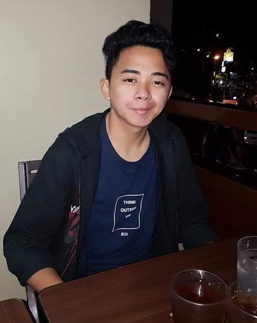

My Not So Interesting Life
Childhood Years
I was born in Pasig city and raised by my Grandparents on my mother's side.1 At that time both of my parents are working so they leave me and my brother with our grandparents but I'm still too young to remember how my everyday life there is.2 Afterwards we moved in Cavite where we live as of the moment and this is the place where I started to make friends and went at the school near us as a kindergarten.3 When I was around 6 years old I had my first love or i would rather say first crush.4 She is our neighbor and she's also a year older than me.5 Well I didn't care much about that and ask her to marry me right away right in front of our other neighbors.6 Everyone laugh it out while she blatanly rejected me but I didn't give up.7 So I told that to her mother too and it went like that for a year it was one of my funniest memory in my childhood.8 Though most of the time it was fun for me there's a time something unexpetected happened.9 It was just a normal day at my 5th grade year.10 When the uncle of my bestfriend suddenly comes to our classroom and informed our teacher and us students that my bestfriend died.11 It was a total shock for everyone no one anticipated it's just awfully surprising.12 A day before that, after class he said to me and our other one friend that he's not feeling well.13 He just sits on his bag while we're telling him that it's time to go home.14 But, the thing is we just leave him when it's getting dark already.15 After his uncle informed us I felt somewhat mad and disapointed to myself.16 I think, I should have done something or why didn't I do something and just leave it's one of my biggest regret in life.17 After that our class including our adviser comes to his funeral.18 I was around 11 years old when it happened and it still hit me whenever I remembers it but it's over now there's no point in looking back at the past.19 So I just live my current life and focus on my future.20
GO Top
Teenage Years
 My teenage years start as well as my highschool life.1 We are also the second batch who will undergo to k to 12.2 During my 7th grade year I was full of foolishness.3 I didn't care about studying, well not until i got 3 failed subjects and my mother scolded me.4 Back then I knew that after i become a senior highschool student everything will be hard it's a complete change of scenery.5 So I thought that I'll just enjoy my highschool life to the fullest before I go up but it didn't end well I guess.6 So I got back by studying and also making new friends.7 During highschool there are a lot of events and I experienced almost all of them.8 Probably one thing I cannot forget is during at out field trip.9 We are riding the bus and on our way to our next destination, currently we are in SLEX when one of our classmates stomach suddenly hurt and badly needed to go to a comfort room.10 Our three teachers inside the bus are panicking while most of us are laughing.11 Luckily when we reach the toll gate they found a comfort room and the day was saved.12 On my 8th grade year I won a chess gold medal on intramurals.13 On my 9th grade year I've been part of a cheering squad though I'm just a lifter cause I can't dance and manage to win it and the intramurals as well it was all fun.14 During my 10th grade year around 3rd quarter me and my mother started to find a school for my senior highschool.15 At that time i was rooting for STEM because it was recommended to me by my NCAE not knowing it would be a big blunder.16 Back then I only knew 4 strands STEM, ABM, HUMMS and GAS.17 I went to STEM solely for the ICT subject in it not knowing that ICT is a strand as well, it was too late when I realized it.18 At first I'm very dissapointed at the start of senior highschool but for not long I started to like and love it because of the friends I made there, my disappointment are now filled with happiness.19 In my 12th grade year I become a chess varsity player again and played in a tournament unfortunately we came up short but the experience is great.20
GO Top
College Years
Frankly speaking I was afraid of college or it was just the respsibilities that I'm afraid.1 I felt like I can't do it maybe I lack inspiration and confidence.2 On our 1st year 1st semester python programming language was introduced to us.3 I have mixed emotions between excitement and nervousness.4 Whenever our professor give a programming activity it feels like a burden and I just want to end it right away.5 Another thing I was dissapointed that I don't have a single code which I made myself.6 All of my code back then are just from my friends.7 But, our professor said that it is normal that if you can't code now maybe you're just a late bloomer those words gave me hope honestly.8 After that the 2nd semester came and with a new programming language which is java.9 Java and python are soo far to each other so at first I was soo stunned during the first demonstration.10 As expected I didn't get it right away.11 The sad part is during that time I am still having a lot of trouble with python and now java came as well.12 I felt like giving up that time actually it's the first time I had felt giving up on academics.13 It just doesn't work for me so i guess giving up is all that left for me.14 Then, our professor on python gave a problem an algorithm problem.15 I tried to solve it for the last time and suddenly i was able to solve it, it gave me pure satisfaction.16 After that I reconsider shifting and gave it another try and I'm a 2nd year now.17 I still faces hardships at the time, but I'm fighting my way.18 This is still just the beginning and I know it.19 But, I'm still not giving up on it and I won't stop until I'm done.20
GO Top